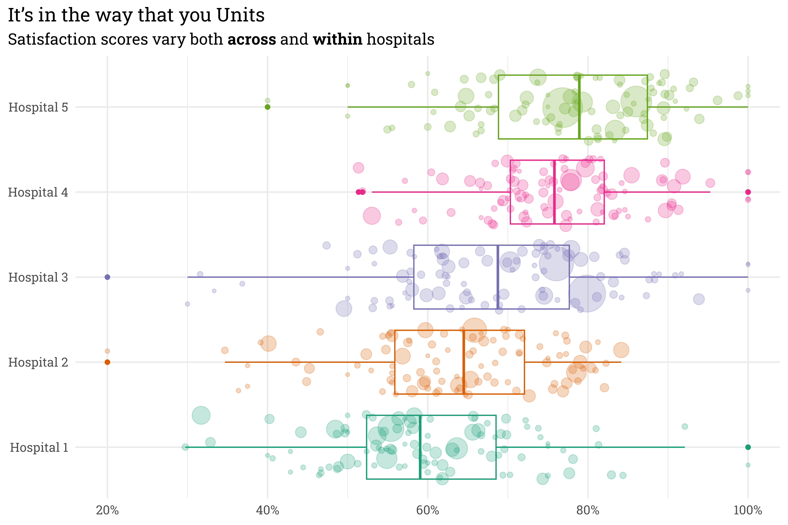

If the past year of working at a large hospital system has taught me one thing, it’s that hospitals are a Russian nesting doll of structure. Within the hospital system, there are several campuses. Within each campus, there are several service areas (inpatient, outpatient, emergency, day surgery, etc.). And finally, within each service area at each campus, there can be many individual hospital units.
Having worked with patient satisfaction data, I know that each of these levels contains useful information that may be beneficial to include in a model. Hospital A, for example, tends to receive better reviews than Hospital B, but within Hospital A the labor & delivery unit tends to receive better reviews than the intensive care unit. Including every single unit as a categorical predictor isn’t a great modeling choice, since information about each unit remains separate (no pooling). On the other hand, ignoring the nested structure lumps all data points together (complete pooling), implicitly making the assumption that the data is independent, which can generate misleading predictions!
This is where hierarchical models come into play! Hierarchical models offer a happy middle ground and allow for partial pooling of information between groups. This approach allows for information to be shared across groups while still treating each group as unique (this is a pretty simplistic summary of hierarchical models; for a more detailed introduction, see Chapter 15 of Bayes Rules!).
While there are non-Bayesian approaches to hierarchical models, they mesh well with a Bayesian framework, so in this post I’ll build a Bayesian model to predict satisfaction scores based on simulated hospital data.
Simulating Hospital Data
I can’t share live data, so I’ll need to simulate some fake data for this example. Let’s start with five hospitals, each with different baseline levels of satisfaction.
In this example, Hospital 1 will tend to have the lowest scores while Hospital 5 will tend to have the highest scores. Within each hospital, we want individual unit-level scores to be able to vary randomly.
Code
# simulate 5 hospitals within the system, each with 100 units (500 total)satisfaction <-tibble(hospital =rep(paste("Hospital", seq(1:5)), 100)) %>%arrange(hospital) %>%# add in the units at each hospitalbind_cols(unit =rep(paste("Unit", seq(1:100)), 5)) %>%mutate(unit =paste(hospital, unit)) %>%# add in the hospital-level interceptleft_join(hospital_prob, by ="hospital") %>%# estimate a unit-level intercept rowwise() %>%mutate(unit_offset =rnorm(1, 0, 0.05),unit_prob = gamlss.dist::rBE(1, hospital_prob + unit_offset, hospital_sigma)) %>%select(hospital, unit, unit_prob) %>%# generate fake responsesmutate(n =round(rlnorm(1, log(100), 1.5)),topbox =rbinom(1, n, unit_prob)) %>%ungroup() %>%select(-unit_prob)# display example at each hospitalset.seed(333)satisfaction %>%group_by(hospital) %>%slice_sample(n =1) %>%mutate(score = topbox/n) %>% knitr::kable()
hospital
unit
n
topbox
score
Hospital 1
Hospital 1 Unit 14
35
21
0.6000000
Hospital 2
Hospital 2 Unit 41
137
107
0.7810219
Hospital 3
Hospital 3 Unit 55
298
252
0.8456376
Hospital 4
Hospital 4 Unit 66
12
7
0.5833333
Hospital 5
Hospital 5 Unit 39
211
169
0.8009479
This unit level variation is important! Even though units within certain hospitals tend to perform worse than units in others, individual units at lower-rated hospitals can still outperform units at highly-rated hospitals! An easier way to see both the hospital-level and unit-level variation is to place all on the same plot.
Code
satisfaction %>%mutate(score = topbox/n) %>%ggplot(aes(x = hospital,y = score,size = n,color = hospital)) +geom_boxplot() +geom_jitter(alpha =0.25) +coord_flip() +scale_color_brewer(palette ="Dark2") +scale_size_continuous(range =c(1, 15)) +scale_y_continuous(labels = scales::label_percent()) +theme(legend.position ="none") +labs(title ="It's in the way that you Units",subtitle ="Satisfaction scores vary both **across** and **within** hospitals",x =NULL,y =NULL)

Here, each point represents an individual unit within a hospital — larger points indicate units with more responses. There’s clearly variation across hospitals, but also variation within each hospital. We can generally trust that the satisfaction score for a unit with lots of responses is accurate, but a unit with few responses can provide misleading scores — some have scores of 100%! I don’t think that these units are actually perfect, it’s likelier that they got lucky.
A hierarchical model will allow us to pool all this information together — when a unit has lots of responses, the model’s estimate of their true score will land pretty close to their raw score. When a unit only has a few responses, however, the model will shrink the estimate of their true score towards the hospital group-level average.
Fitting a Model
I’ve found recently that writing out a model specification helps, so let’s write out the model and priors.
In this case, the number of topbox responses at each unit, \(y_{unit}\), is estimated with a binomial distribution where each patient within that visits the unit has a probability \(\pi_{unit}\) of selecting the topbox response. \(\pi_{unit}\) is allowed to vary from the global mean, \(\mu\), both by hospital (\(\beta_{hospital}\)) and by unit (\(\beta_{unit}\)). This can be implemented in Stan via the {rstanarm} package.
Code
# run chains on separte coresoptions(mc.cores = parallel::detectCores())# fit a bayesian model!satisfaction_model <-stan_glmer(cbind(topbox, n - topbox) ~ (1| hospital) + (1| unit),data = satisfaction,family =binomial(),prior_intercept =normal(0, 2, autoscale =TRUE),prior =normal(0, 2, autoscale =TRUE),prior_covariance =decov(regularization =1, concentration =1, shape =1, scale =1),chains =4,iter =2000,seed =999 )
This model gives us exactly what we were looking for — units with many responses have posterior estimations of \(\pi_{unit}\) that are close to the raw score and have relatively small credible intervals, while the posterior estimate of \(\pi_{unit}\) for a unit with few responses is shrunken towards the hospital average with relatively wide credible intervals.
Code
set.seed(88)satisfaction %>%# draw 1000 posterior predictions of pi for each unit tidybayes::add_epred_draws(satisfaction_model, ndraws =1000) %>%ungroup() %>%# select a sample of 3 random units from each hospital to plotnest(preds =-c(hospital, unit, n, topbox)) %>%group_by(hospital) %>%slice_sample(n =3) %>%mutate(unit =str_sub(unit, start =12),unit = glue::glue("{unit}\n(n = {scales::label_comma()(n)})"),med_pred =map_dbl(preds, ~quantile(.x$.epred, probs =0.5))) %>%ungroup() %>%unnest(preds) %>%# plot!ggplot(aes(x =reorder_within(unit, med_pred, hospital),y = .epred,color = hospital)) +stat_pointinterval() +scale_x_reordered() +scale_y_continuous(labels = scales::label_percent()) +coord_flip() +facet_wrap(~hospital, scales ="free") +theme(legend.position ="none") +labs(title ="\u03C0 in the sky",subtitle ="Posterior estimations of \u03C0 for a random sampling of units", x =NULL,y =NULL,caption ="Pointrange indicates the<br>66% & 95% posterior credible interval") +scale_color_brewer(palette ="Dark2")
With a hierarchical model, we can even make predictions for new units that didn’t appear in the original training data. If we were to introduce a new unit at each hospital, the model can still rely on the hospital-level term to estimate scores.
Code
set.seed(1)tibble(hospital =paste("Hospital", seq(1:5))) %>%mutate(unit = glue::glue("{hospital}\nNew Unit")) %>%add_epred_draws(satisfaction_model) %>%ggplot(aes(x = unit,y = .epred,color = unit)) +stat_pointinterval() +scale_y_continuous(labels = scales::label_percent()) +coord_flip() +scale_color_brewer(palette ="Dark2") +theme(legend.position ="none") +labs(title ="New unit, who this?",subtitle ="Posterior estimations of \u03C0 for hypothetical new units at each hospital",x =NULL,y =NULL,caption ="Pointrange indicates the<br>66% and 95% posterior credible interval")
Some closing thoughts
The model I used here can be referred to as a random intercept model. In this case, the intercept is allowed to vary by hospital and unit. Had I included a predictor term — age, for example — I could have put together a random slope model, which would have allowed the age term to also vary by hospital and unit. This would allow for one hospital to be modeled as having better scores for young patients while another hospital could see better scores for older patients. This sort of flexibility is useful, but in my experience, simply accounting for the hierarchical structure of the data with an intercept-only model gets you 90% of where you need to go!
Citation
BibTeX citation:
@online{rieke2022,
author = {Mark Rieke},
title = {Hierarchical {Hospitals}},
date = {2022-11-14},
url = {https://www.thedatadiary.net/posts/2022-11-14-hierarchical-hospitals},
langid = {en}
}